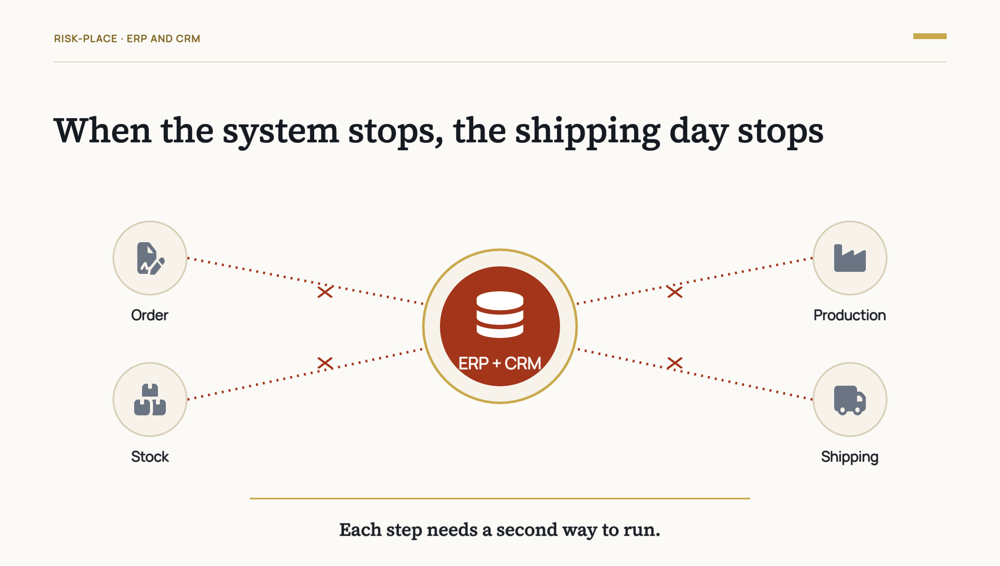

An order rarely belongs to one department. Sales sees the customer and promised date, the warehouse sees stock, production sees the task and the gate sees the exit document. When ERP and CRM connect all these steps, one unavailable database can stop the whole day without any physical damage.

Look at the invisible shipping chain
Follow one order through the systems. Where are the price and special terms recorded? How does the warehouse know which batch to reserve? How does production receive the specification? Who lets the vehicle leave, and on what evidence?
If every answer is to open the same database, the business has a single point of failure. ERP and CRM may technically be separate products. For the customer, the outcome matters: without either system, the promise and the shipment diverge.
What can genuinely run by hand
A manual path is useful for a limited list of commodity operations. For example, take an order on a prepared form, check the item against an exported balance, issue an agreed document and tell the customer the new date.
This path has boundaries. A unique specification, special price or regulated batch cannot safely be reconstructed from memory. Keep their data and rules separately, with restricted access and clear instructions for use.
- Export only the necessary items and refresh the export on a schedule.
- State who may promise a date and release goods without the system.
- Set a maximum volume of manual work for one day in advance.
The second way exists before the attack
A form in a desk drawer does not create a working process. The team needs to know where the current export sits, which document applies, where every operation is recorded and how a shift handover works. Otherwise, the manual day becomes a set of incompatible notes.
Run a short rehearsal: one order, one stock item, one shipment and one customer letter. Time the work and mark where people had to call for authority or search for data. Those points show where the second path needs strengthening.
Returning to the system starts with reconciliation
Once the database is restored, the company cannot simply resume from the familiar point. Every manual order, stock movement and shipment must be matched against the system records. The database becomes the main source for the working day again only after documents and physical actions agree.
A ransomware readiness check walks through this chain step by step: export availability, shipping authority and the reconciliation process after recovery.
Frequently asked questions
A backup helps restore the data. Until restoration, the company needs a second way to accept orders and process permissible shipments.
The process that supports the next shipment using prepared data. This is usually limited order acceptance and the release of commodity items.
Yes, if fulfilling an order needs both systems and the loss of either stops the customer promise or the departing vehicle.
Is your team ready for the first hour of a crisis?
You test a plan by running a scenario. Reading it is not enough. The assessment shows the gaps, and the corporate format works through them with your team on your own processes.